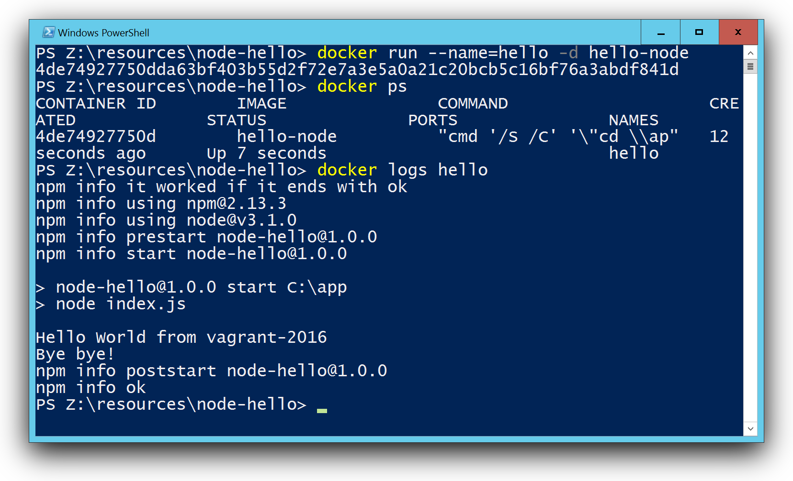
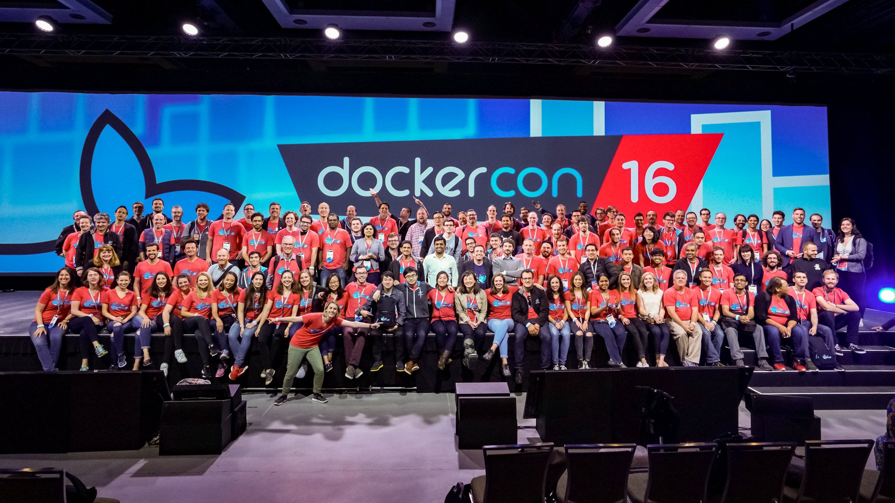
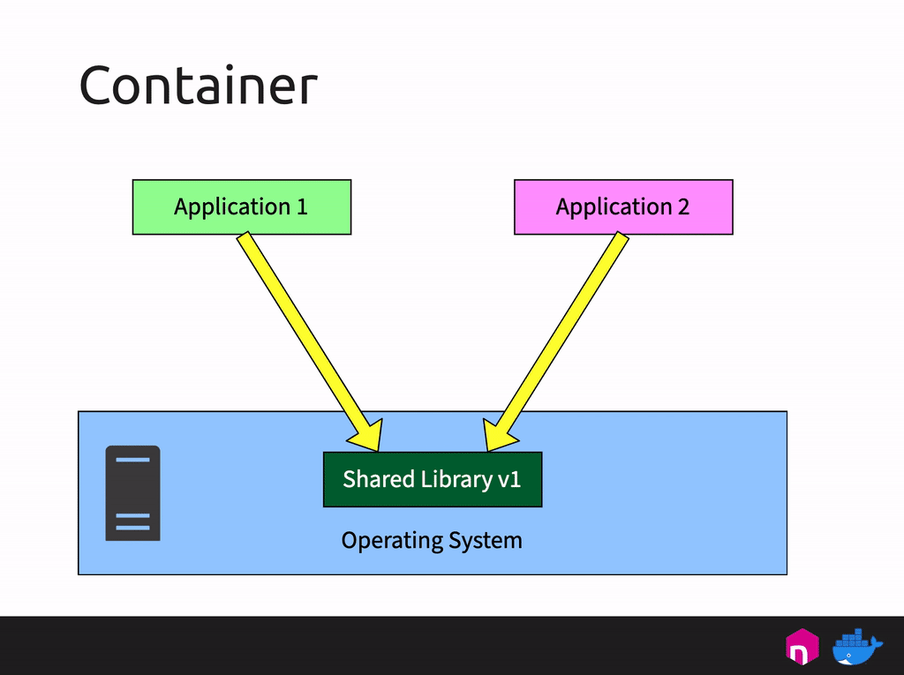
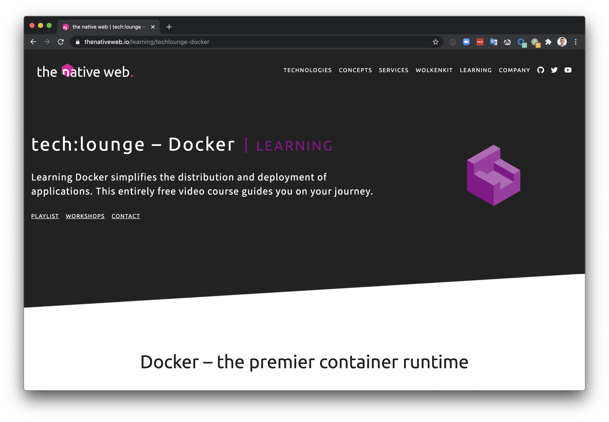

Seit kurzem arbeite ich an einer Videoserie für den Einstieg in Docker und Container. Es tut gut, sich selbst an die eigenen Anfänge mit Docker zu erinnern und "wie schwer" das am Anfang war.
Mein Anfang mit Docker ...
... war im Jahr 2014. Ich war damals Softwareingenieur und wir hatten zu dieser Zeit Werkzeuge wie Vagrant und Packer erschnuppert. Das half uns sehr, die unterschiedlich gewachsenen Entwicklungsumgebungen zu vereinheitlichen und vor allem das Backup zu minimieren. Anstatt zig Gigabyte an VM-Images zu sichern brauchte man ja nur ein paar Kilobyte an Sourcecode zur automatischen Erstellung der Umgebung einchecken.
Dann bekamen wir Besuch von Golo Roden, der als Node.js Trainer zu uns kam und irgendwann auch mal Docker gezeigt hat. Das fühlte sich alles sehr seltsam an, so ganz anders als virtuelle Maschinen und dann war auch alles wieder weg, was man im Container gemacht hat.
Vom Raspberry Pi zu HypriotOS
Aus einer Meetupgruppe heraus haben wir uns zu fünft gegen Ende 2014 zur Aufgabe gemacht, Docker "so richtig" zu lernen. Wir kamen auf die Idee, dass wir den Raspberry Pi als Übungsplattform verwenden wollten. Doch so einige Hürden gab es - damals noch die erste Generation Raspberry Pi B Single Core mit 512 MB RAM - Docker war nicht aktuell auf diesem Gerät verfügbar.
Und so ging unsere Reise los ins Land der Container. Zunächst Docker für ARM compilieren, dann beim Linuxkernel noch fehlende Module bauen. Und als wir alle Einzelteile zusammen hatten, kam uns die Idee, dass es für andere Leute doch toll wäre, wenn sie das nicht auch erst selbst bauen müssten.
So entstand die Idee einer eigenen Raspberry Pi Distro auf einer SD-Karte - HypriotOS war geboren.
Als wir fast soweit waren mit einem ersten SD-Karten-Image kam der Raspberry Pi 2 heraus und durchkreuzte alles unsere Pläne. Nichts lief auf dem Gerät, aber wir fanden in windeseile heraus, was noch fehlte. Am 8.2.2015 war es dann soweit: HypriotOS mit Docker 1.4.1 lief auf allen Raspberry Pis!

Windows Container und das "neue" Microsoft
Anfang 2015 wurde die Partnerschaft zwischen Microsoft und Docker verkündet. Microsoft arbeite daran, Docker auf Windows Server zu portieren. So sehr ich seit 2014 meinen Mac lieben lernte, so sehr fasziniert war ich von der Idee, das gleiche Konzept auf anderen Betriebssystemen nutzen zu können. Genügend Leidenskraft hatte ich ja gelernt von unseren Abenteueren auf dem Raspberry Pi.
Im August 2015 war es dann auch für die interessierte Öffentlichkeit soweit. Der Technical Preview 3 von Windows Server 2016 konnte als ISO-Datei heruntergeladen werden. Ich war damals im Urlaub und habe das Bauernhof-WLAN arg strapaziert (und gelernt, mit curl abgebrochene Downloads wieder fortzusetzen 😅).
Da ich all meine Windows VM's per Packer baue, war das ideal. Neue ISO-Datei, ein paar Versuche mit packer build und fertig war meine Spielumgebung.
Auf meinem Blog hatte ich damals beschrieben, wie man ein erstes Node.js Windows Image baut.

Das beste Erlebnis war allerdings, als ich nach den ersten Versuchen Fehler festgestellt, dann brav ein GitHub-Issue geöffnet und am nächsten Morgen Antwort erhalten - von einem Microsoft-Mitarbeiter. Whaaaat? Wie fühlte man sich früher beim Senden von "Feedback an Microsoft"? Da kam ja eh nie etwas dabei heraus. Aber hier hatte man quasi einen direkten Draht. Ebenso den Mut des Teams, die Docker Engine per Opensource NSSM als Dienst zu starten als "walking skeleton", bis man später die Engine direkt als Windowsdienst registrieren konnte. Das alles zog mich immer mehr in den Bann.
Vom Docker Captain und Microsoft MVP ...
Viele meiner Blog Posts haben die Aufmerksamkeit bei Docker geweckt, und ebenso bei Microsoft. Und so wurde ich zunächst Docker Captain, und dann Mitte 2016 auch zum Microsoft MVP ernannt. Das sind zwei ähnliche Programme mit Leuten, die aktiv in der Community helfen und Beiträge liefern, Meetups organisieren und so weiter.

Foto: DockerCon 2016 - Links hinten haben zwei Docker-Piraten das "Deck" des Mutterschiffs erstürmt :-)
... zu Docker
Ja, und irgendwann kam die Anfrage, ob ich eine der interessanten Aufgaben bei Docker übernehmen möchte. Und so bin ich nun seit Anfang 2019 bei Docker, kannte die Community-Szene und damit Docker von "außen" und nun auch das Team "von innen". Im Docker Desktop Team sind wir stets dabei, die Komplexität auf Mac und Windows so gut zu verstecken, damit unsere Anwender es möglichst einfach haben, Container lokal laufen zu lassen.
Und das Thema "Docker on ARM" geht ja nun auf dem Desktop weiter... :-)
Die Videoserie
Doch nun zurück zur Videoserie. Auch wenn meine "Reise in der Welt der Container" schon sehr lang ist und mich an viele "exotische Orte" gebracht hat (die Container Challange auf dem Raspberry Pi, Windows Container auf einem Raspberry Pi, Minimale Nanoserver Images selbst bauen, ...), so war es doch eine interessante Idee, als mich Golo kontaktierte und wir uns über einen Einsteigerkurs unterhalten hatten. Und aus der Idee folgten Taten.
In der ersten Folge habe ich versucht, ohne Vorkenntnisse und auch ohne Vorinstallation das Thema Docker und den Zweck von Containern zu beschreiben. Im Prinzip das Video, das ich sechs Jahre früher gebraucht hätte, um schneller den Einstieg zu schaffen.

Die tech:lounge von the native web
Du findest die kostenlose Videoserie in der tech:lounge von the native web. Ich bin froh, dass das Team rund um Golo die Webseite aufbereitet und die schönen Einleitungen schreibt. 🤗
thenativeweb.io/learning/techlounge-docker

Links zu den einzelnen Folgen
Ich stelle dir aber auch die Links zu den einzelnen Folgen zur Verfügung.
- Folge 1: Grundkonzepte
- Folge 2: Docker installieren auf Windows
- Folge 2: Docker installieren auf Mac
- Folge 2: Docker installieren auf Linux
- Folge 3: Container verwenden
- Fortsetzung folgt...
Es sind noch weitere Folgen in Arbeit und in der Planung. Die Übungsbeispiele, die ich im Videokurs verwende, sind auf GitHub zu finden:
github.com/thenativeweb/techlounge-docker
Feedback willkommen
Gerne kannst Du mir und dem Team von the native web Fragen stellen und Feedback geben, was eventuell in einer weiteren Folge als Thema aufgreifen sollten.
Nutze hierzu die Kommentare hier in meinem Blog, oder bei den Youtube-Videos oder frage mich einfach auf Twitter: @stefscherer
Viel Spaß und Freude beim Lernen!